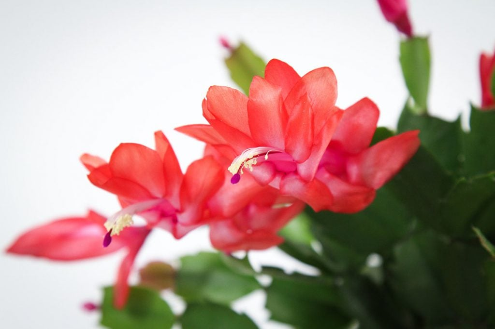

A flor-de-maio é uma ótima opção de planta para ter em casa e trazer mais cores aos ambientes. Fácil de cuidar, ela é discreta em parte do ano, mas pode deixar os cantinhos mais bonitos, elegantes e coloridos quando se torna uma planta exuberante com muitas flores. Mas, para que ela floresça de forma saudável, é necessário seguir algumas orientações específicas. O nome científico da flor-de-maio é Schlumbergera truncata, e ela também é conhecida como cacto-de-natal e flor-de-seda. É uma espécie da família dos cactos e originária das regiões tropicais do Brasil, encontrada na natureza principalmente em florestas das regiões Sudeste e Nordeste. Com as condições adequadas de solo, adubação e luminosidade, elas podem crescer bastante e ter um ciclo de vida longo.
